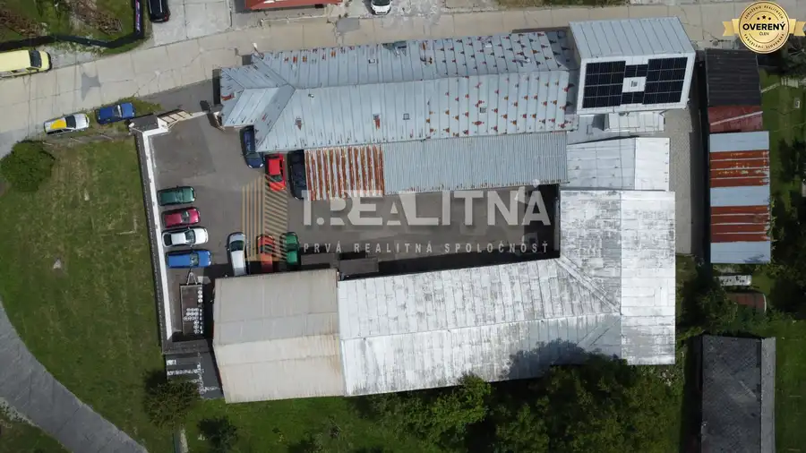
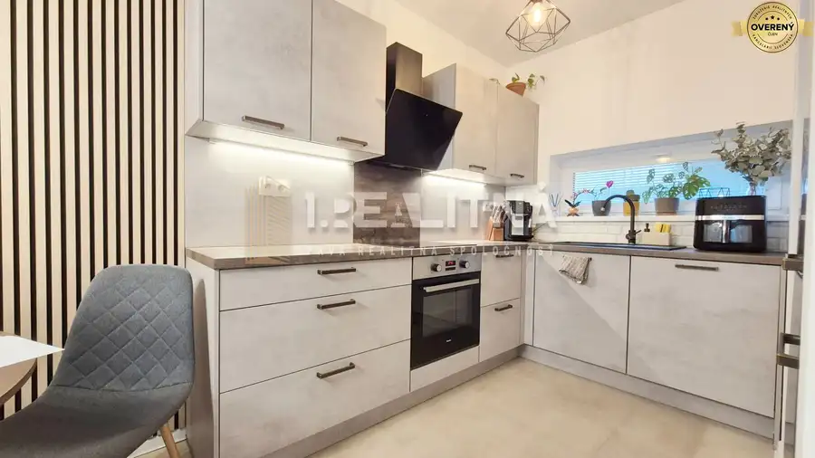
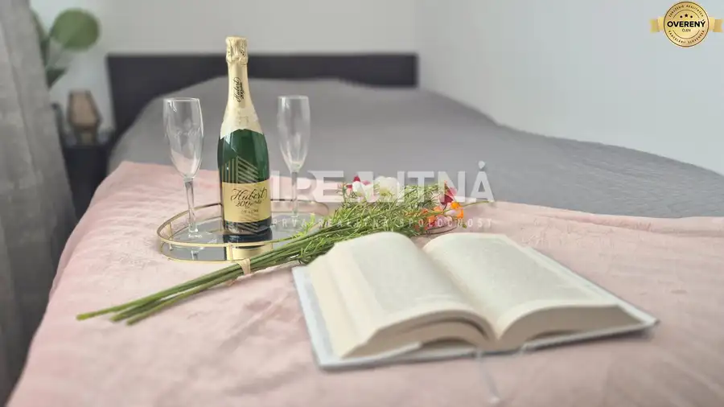

Na predaj 3 izbový byt 75m2, Zvolen Západ ()
Zvolen
- Dispozícia3-izbový
- Plocha75.17 m²
- Poschodie8. z 8
- Stavpôvodný
O nehnuteľnosti
Máme pre vás novinku – 3 izbový byt na Západe vo Zvolene. Poteší tých, ktorí hľadajú bývanie s príjemnou energiou, pekným výhľadom a priestrannými izbami. Nachádza sa na vyššom poschodí, takže svetla je tu cez deň naozaj dosť. Prečítajte si viac o tejto nehnuteľnosti, ktorá má určite potenciál.
3D OBHLIADKA: https://lnk.sk/yfmqx
PODROBNOSTI:
✅ Výmera bytu: 75,17 m² v osobnom vlastníctve
✅ Nachádza sa na 8. poschodí z 8 – žiadni susedia nad hlavou, maximálny pokoj
✅ Byt v pôvodnom, ale zachovalom a čistom stave
✅ Priestranné veľké izby s možnosťou prerobenia z 3-izbového na 4-izbový byt
✅ Plastové okná
✅ Jadro je umakartové
✅ Nový výťah
✅ Zateplený panelový dom
✅ Nové poštové schránky
✅ K bytu patrí pivnica
✅ Mesačné náklady 150€
✅ Lokalita s výbornou občianskou vybavenosťou – obchody, školy, škôlky, MHD na dosah ruky
✅ Výhodný prístup – predný aj zadný vchod do paneláku
✅ Parkovanie v okolí
Potenciál, svetlo, pokoj – všetko na jednom mieste. Príďte sa presvedčiť sami a dohodnite si s nami obhliadku. →
Parametre
| Úžitková plocha | 75.17 m² |
|---|---|
| Poschodie | 8/posledné poschodie |
| Počet poschodí | 8 |
| Stav | pôvodný |
| Postavené z | panel |
| Energetický certifikát | nie |
| Dátum zverejnenia | 15. 10. 2025 |
Kde to je
Mohlo by Vás zaujímať

Nebytové priestory10 Cena dohodouPriemyselný areál (tri haly, recepcia, kancelária, garáže, logistika) Banská Bystrica 1260 m²1. podlažie Prvá realitná spoločnosť predáva priemyselný areál vhodný na multifunkčné využitie so skvelou logistickou dispozíciou blízko centra mesta Banská…
Byt10 310 000 €Moderný 3-izbový mezonet v novostavbe rodinného domu Podunajské Biskupice, Bratislava 3-izbový68 m² Prvá realitná spoločnosť predáva časť dvojpodlažného rodinného domu v Podunajských Biskupiciach s dvoma parkovacími miestami, záhradkou a terasou.…
Byt10 174 990 €Moderný dvojizbový byt, 37m2, Dúbravka Dúbravka, Bratislava 2-izbový37 m²8. podlažie Predávame krásny 2-izbový byt v Dúbravke – na ulici Drobného 24. Byt vás zaujme najmä svojou rekonštrukciou, pri ktorej vznikla z jednoizbového bytu…